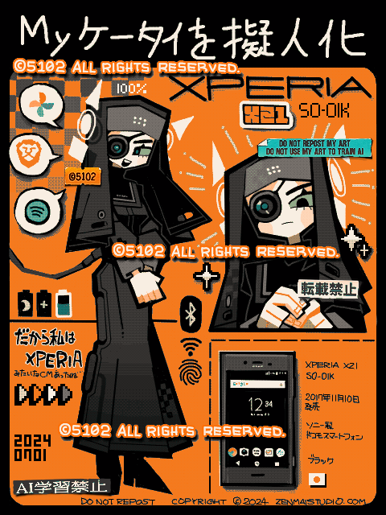

ケータイ擬人化タグをやってみた

Made with
Tegaki Editor
手書きブログ
で描いたもの。
初めて持ったケータイ（Xperia XZ1）が使用6年目にしてついにぶっ壊れたので、記念に「ケータイ擬人化」のタグをやってみた。そういうタグが手書きブログ内にあるんですよ。
手書きブログ全盛期の、古のユーザーたちの作品を漁ると時代感じて超たのしい。
画面が浮き出てきたし、バッテリーが膨張してる？ぽいので早いとこ機種変更しないと大変なことになる気がする。
2024/07/01
 ケータイ擬人化タグをやってみた
ケータイ擬人化タグをやってみた